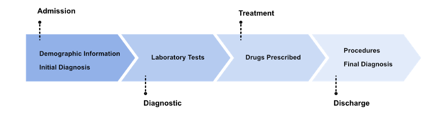

Motivation
Why ICU readmission?
Readmissions to intensive care units (ICUs) are both a health risk for patients and a financial burden for health facilities.
With the advent of electronic health records (EHRs), healthcare has become more data-driven and with it, more machine learning methods have been used to predict on ICU settings. However, these methods disregard the meaning and relationships of data objects, working with a small portion of information..
Why ontologies?
Ontologies and knowledge graphs (KG) can help bridge the gap between data and scientific context.
Linking EHR data to ontologies through semantic annotations, feed an additional layer of information about into machine learning systems.
The use of a graph representation of ontologies formalises a knowledge graph that enables the detailed description of clinical metadata with objects and relationships.
Key Aspect
Semantic Technologies
Content erichment

Ontologies
Metadata descriptions

Knowledge Graphs
Interlinked descriptions

Machine Learning
Readmission prediction

Knowledge Graph Embeddings
Vectorial representations
Methodology
Method Development
We have developed an approach that enriches EHR data with semantic annotations to ontologies and generates KG embeddings to contextualise a patient's stay in the ICU with the following steps.
Method Fundamentals
Semmantic Annotation
Knowledge Graph embedding
Experimental Design
Baseline Reproduction
In order to evaluate the performance of the proposed methodology, a basis of comparison was established based on the current state of the art. This allows for a more transparent assessment than simply using the reported values, as a replication is carried out in the same environment, allowing for performance comparisons and improvement measurements.One Ontology Embedding
Does an evaluation of the impact of considering embeddings for all the features we extracted. Each feature set is represented by an NCIT RDF2Vec embedding vector.Multiple Ontologies Embeddings
Does a comparison of using embeddings based on different ontologies: NCIT for the initial diagnosis and the MIMIC-III proposed ontologies for each respective feature type. Each feature set is represented by an RDF2Vec embedding made with the specific ontology.Snap Shot Predictions
To capture the evolution of an ICU stay and close the gap with a real-world scenario, predictions are made strategically at the four most informative points of the stay. Admission, Diagnostic, Treatment and Discharge. Admission can be considered as a precursor to ICU. It contains the data available when the patient enters the ICU, demographic information and the initial diagnosis. Diagnostic and Treatment are the phases in the ICU, which include the data before the ICU as well as the laboratory tests and the prescribed medication. Discharge is then the post ICU phase. It includes all the previous information as well as the information recorded at discharge: final diagnosis and procedures. Although procedures can be considered as information from the ICU, they are only recorded for billing purposes at the end of the stay and are therefore only considered at the last moment.
Results


One Ontology or Several?
Based on the evidence, two strategies are possible for our approach: (I) Assign the whole dataset to an ontology; (II) Assign each specific set to a specific ontology.
The best results are obtained only with the one ontology (2nd), which is consistently reliable. The conjunction with RF, achieved 0.831 AUROC and 0.691 AUPRC.
An improvement of more than 0.2 and 0.4 over the baseline, not attainable with multiple ontologies.
Are timed predictions reliable?
To close the gap with the real world, we have made prediction on the crucial points where information is added during the stay.
Our approach achieved reliable values from the second moment forward, that increased as more information became available. This makes the real world prediction an achievable target, that can reliably trust the predictions, and sets laboratory tests and prescriptions as most effective.
Conclusions
Contribuitions

Enriched patient information and embeddings available for reproducibility on GitHub.
Best Oral Communication Award at Bioinformatics Open Days.
Future Work
Authors
Ricardo Carvalho
LASIGE, Faculdade de CiênciasDaniela Oliveira
LASIGE, Faculdade de Ciências
Catia Pesquita
LASIGE, Faculdade de CiênciasFunding
This research work is supported by the Fundação para a Ciência e a Tecnologia through the LASIGE Research Unit, UIDB/00408/2020 and UIDP/00408/2020, and through a LASIGE Grant UIDB/00408/2020